Contents
Flux Test Data Analysis - 5/21/2024
clc, clear, close all
Helper Functions
As = 0.064844702;
P = 101325;
T = 293.15;
ppm_to_mol = @(ppm) (ppm*P)/(1e6*8.314*T);
mol_to_ppm = @(mol) (1e6*8.314*mol*T)/P;
lpm_to_cms = @(lpm) lpm/60000;
cms_to_lpm = @(cms) cms*60000;
Choose Dataset
dataset = "5.21";
Import Datasets
licor = IMPORTLICORFILE('data/'+dataset+'/licor.data');
daq = IMPORTDAQFILE('data/'+dataset+'/daq.txt');
daq.Q = daq.Q/1000;
map = readtable("data/mapping.csv");
dataset_idx = table2array(map(:,1)) == double(dataset);
map = map(dataset_idx,:);
daqoffset = min(table2array(map(:,8)));
Correct Timestamps (Only If DAQ Lost RTC Data)
daq.T = timeofday(daq.T) + daqoffset;
Find Cross-Corelation Lag & Offset Datasets
corr_data = synchronize(licor, daq, 'regular', 'mean','TimeStep', seconds(5));
corr_data_c = corr_data.C;
corr_data_cb = corr_data.CB;
opt_lag = 0;
opt_corr = -inf;
for lag = -850:850
if lag > 0
corr_data_cb_shifted = [nan(lag, 1); corr_data_cb(1:end-lag)];
elseif lag < 0
corr_data_cb_shifted = [corr_data_cb(-lag+1:end); nan(-lag, 1)];
else
corr_data_cb_shifted = corr_data_cb;
end
non_nan_indices = ~isnan(corr_data_c) & ~isnan(corr_data_cb_shifted);
current_corr = corr(corr_data_c(non_nan_indices), corr_data_cb_shifted(non_nan_indices));
if current_corr > opt_corr
opt_corr = current_corr;
opt_lag = lag;
end
end
if opt_lag > 0
shifted_cb = [nan(opt_lag, 1); corr_data.CB(1:end-opt_lag)];
shifted_ca = [nan(opt_lag, 1); corr_data.CA(1:end-opt_lag)];
shifted_ta = [nan(opt_lag, 1); corr_data.TA(1:end-opt_lag)];
shifted_tb = [nan(opt_lag, 1); corr_data.TB(1:end-opt_lag)];
shifted_ha = [nan(opt_lag, 1); corr_data.HA(1:end-opt_lag)];
shifted_hb = [nan(opt_lag, 1); corr_data.HB(1:end-opt_lag)];
shifted_q = [nan(opt_lag, 1); corr_data.Q(1:end-opt_lag)];
elseif opt_lag < 0
shifted_cb = [corr_data.CB(-opt_lag+1:end); nan(-opt_lag, 1)];
shifted_ca = [corr_data.CA(-opt_lag+1:end); nan(-opt_lag, 1)];
shifted_ta = [corr_data.TA(-opt_lag+1:end); nan(-opt_lag, 1)];
shifted_tb = [corr_data.TB(-opt_lag+1:end); nan(-opt_lag, 1)];
shifted_ha = [corr_data.HA(-opt_lag+1:end); nan(-opt_lag, 1)];
shifted_hb = [corr_data.HB(-opt_lag+1:end); nan(-opt_lag, 1)];
shifted_q = [corr_data.Q(-opt_lag+1:end); nan(-opt_lag, 1)];
else
shifted_cb = corr_data.CB;
shifted_ca = corr_data.CA;
shifted_ta = corr_data.TA;
shifted_tb = corr_data.TB;
shifted_ha = corr_data.HA;
shifted_hb = corr_data.HB;
shifted_q = corr_data.Q;
end
corrected_corr_data = corr_data;
corrected_corr_data.CB = shifted_cb;
corrected_corr_data.CA = shifted_ca;
corrected_corr_data.TA = shifted_ta;
corrected_corr_data.TB = shifted_tb;
corrected_corr_data.HA = shifted_ha;
corrected_corr_data.HB = shifted_hb;
corrected_corr_data.Q = shifted_q;
corrected_corr_data = rmmissing(corrected_corr_data);
figure();
hold on;
plot(corrected_corr_data.T, corrected_corr_data.C, 'b', 'DisplayName', 'Raw LICOR');
plot(corrected_corr_data.T, corrected_corr_data.CB, 'g', 'DisplayName', 'Corrected DAQ Chamber');
plot(corrected_corr_data.T, corrected_corr_data.CA, 'r', 'DisplayName', 'Corrected DAQ Ambient');
plot(corr_data.T, corr_data.CB, 'c', 'DisplayName', 'Raw DAQ Chamber')
plot(corr_data.T, corr_data.CA, 'm', 'DisplayName', 'Raw DAQ Ambient')
ylabel('CO_2 [ppm]');
legend();
title(["Automatic Timestamp Correction" "[DATASET " + dataset + "]"]);
xlabel('Time');
grid on
hold off;
corr_data = corrected_corr_data;
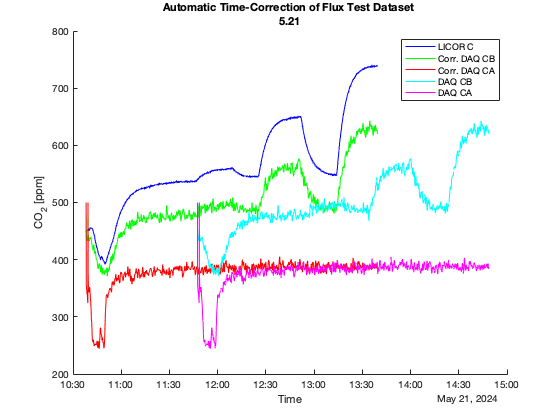
Calibrate Sensors
load('calib.mat')
corr_data.CB_CALIB = predict(lin_rega, [corr_data.CB, corr_data.TB, corr_data.HB]);
corr_data.CA_CALIB = predict(lin_regb, [corr_data.CA, corr_data.TA, corr_data.HA]);
corr_data.C_CALIB = corr_data.C.*0.9996-5.5211;
corr_data.Q_CALIB = corr_data.Q*1.227+0.0143;
figure();
hold on;
plot(corr_data.T, corr_data.CB_CALIB, 'g', 'DisplayName', 'Corrected DAQ Chamber');
plot(corr_data.T, corr_data.CA_CALIB, 'r', 'DisplayName', 'Corrected DAQ Ambient');
plot(corr_data.T, corr_data.C_CALIB, 'b', 'DisplayName', 'Corrected LICOR')
plot(corr_data.T, corr_data.CB, 'c', 'DisplayName', 'DAQ Chamber')
plot(corr_data.T, corr_data.CA, 'm', 'DisplayName', 'DAQ Ambient')
plot(corr_data.T, corr_data.C, 'k', 'DisplayName', 'LICOR')
ylabel('CO_2 [ppm]');
legend();
title(["Calibrations Applied to Flux Dataset" "[DATASET " + dataset + "]"]);
xlabel('Time');
hold off;
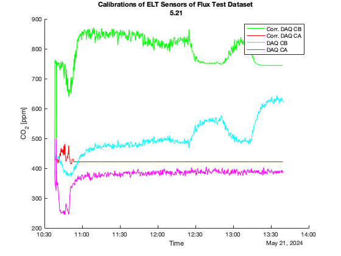
Seperate Datasets into Set Points
data = [];
for dataset_idx = 1:height(map)
tStart = map{dataset_idx, 8};
tStartLicor = map{dataset_idx, 10};
tEnd = map{dataset_idx, 9};
tEndLicor = map{dataset_idx, 11};
data_idx = corr_data.T < tEndLicor & corr_data.T > tStartLicor;
dataTmp = corr_data(data_idx, :);
data = dataTmp;
data.CB = movmean(data.CB, 6);
data.CA = movmean(data.CA, 6);
figure();
hold on
plot(data.T, data.C, 'b', 'DisplayName', 'LICOR Reference')
plot(data.T, data.CB, 'g', 'DisplayName', 'DAQ Chamber')
plot(data.T, data.CA, 'r-', 'DisplayName', 'DAQ Ambient')
ylabel('CO_2 [ppm]');
legend();
title(["Raw Data - Delivering " + map{dataset_idx, 4} + " μmol/m^2/s", "[DATASET " + dataset + "]"]);
xlabel('Time');
hold off
figure();
hold on
plot(data.T, data.C_CALIB, 'b', 'DisplayName', 'Corrected LICOR Reference')
plot(data.T, data.CB_CALIB, 'g', 'DisplayName', 'Corrected DAQ Chamber')
plot(data.T, data.CA_CALIB, 'r-', 'DisplayName', 'Corrected DAQ Ambient')
ylabel('CO_2 [ppm]');
legend();
title(["Calibrated Data - Delivering " + map{dataset_idx, 4} + " μmol/m^2/s", "[DATASET " + dataset + "]"]);
xlabel('Time');
hold off
data.C_FLOOR = data.C_CALIB - min(data.C_CALIB);
data.CB_FLOOR = data.CB_CALIB - min(data.CB_CALIB);
data.CA_FLOOR = data.CA_CALIB - min(data.CA_CALIB);
figure();
hold on;
plot(data.T, data.CB_FLOOR, 'g', 'DisplayName', 'DAQ CB');
plot(data.T, data.CA_FLOOR, 'r', 'DisplayName', 'DAQ CA');
plot(data.T, data.C_FLOOR, 'c', 'DisplayName', 'LICOR')
ylabel('CO_2 [ppm]');
legend();
title(["Floored Data - Delivering " + map{dataset_idx, 4} + " μmol/m^2/s", "[DATASET " + dataset + "]"]);
xlabel('Time');
hold off;
thresh = 0.05;
cb_ss = find(abs(diff(movmean(data.CB_CALIB, 100)))<thresh);
c_ss = find(abs(diff(movmean(data.C_CALIB, 100)))<thresh);
figure();
hold on;
plot(data.T(c_ss), data.CB_CALIB(c_ss), 'gd', 'DisplayName', 'Steady-State DAQ Chamber');
plot(data.T(cb_ss), data.CA_CALIB(cb_ss), 'rd', 'DisplayName', 'Steady-State DAQ Ambient');
plot(data.T(cb_ss), data.C_CALIB(cb_ss), 'cd', 'DisplayName', 'Steady-State LICOR')
plot(data.T, data.CB_CALIB, 'g.', 'DisplayName', 'DAQ Chamber');
plot(data.T, data.CA_CALIB, 'r.', 'DisplayName', 'DAQ Chamber');
plot(data.T, data.C_CALIB, 'c.', 'DisplayName', 'LICOR')
ylabel('CO_2 [ppm]');
legend();
title(["Steady State Indices - Delivering " + map{dataset_idx, 4} + " μmol/m^2/s", "[DATASET " + dataset + "]"]);
xlabel('Time');
hold off;
data.F = ((lpm_to_cms(data.Q_CALIB).*ppm_to_mol(data.CB_CALIB-data.CA_CALIB))./As).*1e6;
data.F_FLOOR = ((lpm_to_cms(data.Q_CALIB).*ppm_to_mol(data.CB_FLOOR-data.CA_FLOOR))./As).*1e6;
data.F_LICOR = ((lpm_to_cms(data.Q_CALIB).*ppm_to_mol(data.C_FLOOR))./As).*1e6;
f_mean_ss = mean(data.F(cb_ss));
f_floor_mean_ss = mean(data.F_FLOOR(cb_ss));
f_licor_mean_ss = mean(data.F_LICOR(cb_ss));
f_std_ss = std(data.F(cb_ss));
f_floor_std_ss = std(data.F_FLOOR(cb_ss));
f_licor_std_ss = std(data.F_LICOR(cb_ss));
figure();
hold on;
plot(data.T(cb_ss), data.F(cb_ss), 'g', 'DisplayName', "SS Flux, μ: " + f_mean_ss + " σ: " + f_std_ss + " μmol/m^2/s");
plot(data.T(c_ss), data.F_LICOR(c_ss), 'r', 'DisplayName', "SS Flux FLOOR LICOR, μ: " + f_licor_mean_ss + " σ: " + f_licor_std_ss + " μmol/m^2/s");
plot(data.T(c_ss), data.F_FLOOR(c_ss), 'c', 'DisplayName', "SS Flux FLOOR, μ: " + f_floor_mean_ss + " σ: " + f_floor_std_ss + " μmol/m^2/s");
yline(map{dataset_idx, 4}, 'k--', 'DisplayName', "Delivered Flux")
ylabel('CO_2 Flux μmol/m^2/s');
legend();
title(["Steady State Flux Results - Delivering " + map{dataset_idx, 4} + " μmol/m^2/s", "[DATASET " + dataset + "]"]);
xlabel('Time');
hold off;
figure();
hold on;
plot(data.T, data.F, 'g', 'DisplayName', "Flux");
plot(data.T, data.F_LICOR, 'r', 'DisplayName', "Flux FLOOR LICOR");
plot(data.T, data.F_FLOOR, 'c', 'DisplayName', "Flux FLOOR");
yline(map{dataset_idx, 4}, 'k--', 'DisplayName', "Delivered Flux")
ylabel('CO_2 Flux μmol/m^2/s');
legend();
title(["Flux Results - Delivering " + map{dataset_idx, 4} + " μmol/m^2/s", "[DATASET " + dataset + "]"]);
xlabel('Time');
hold off;
end
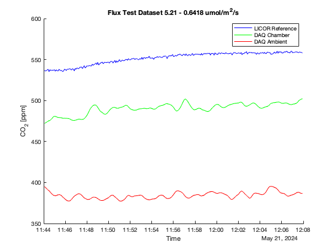 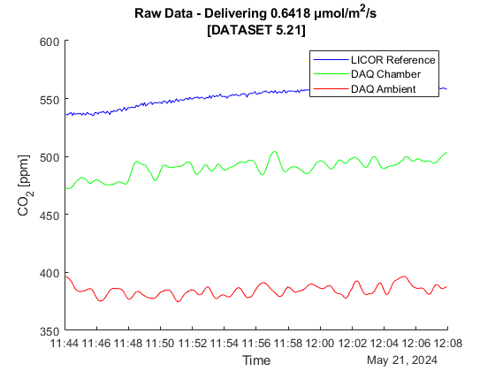 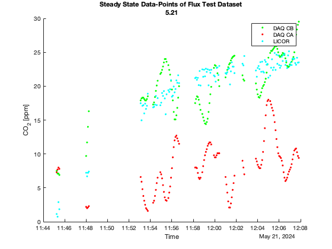 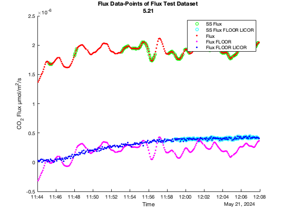 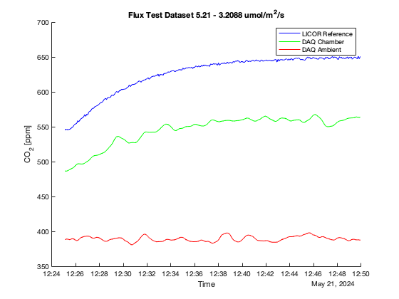 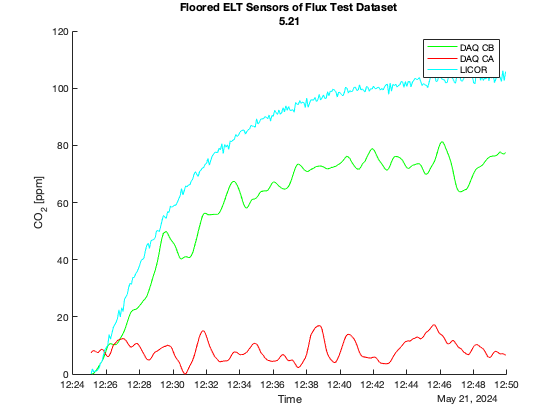 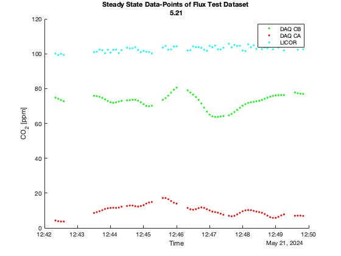

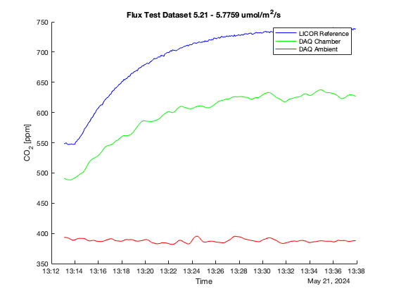 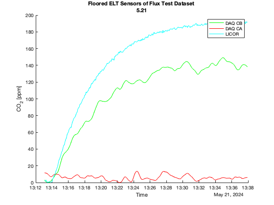 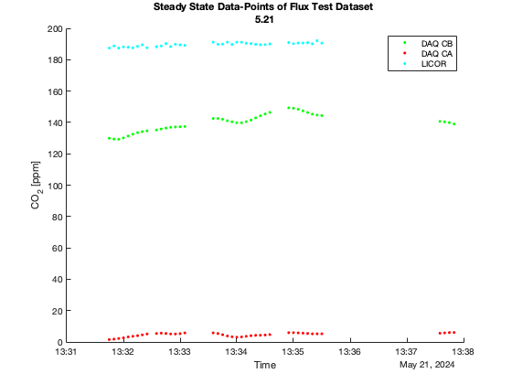 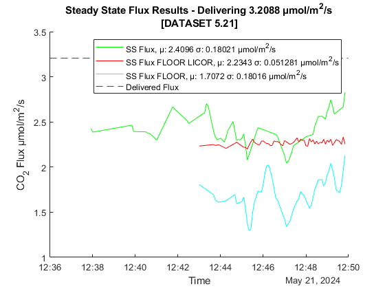 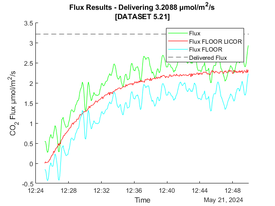


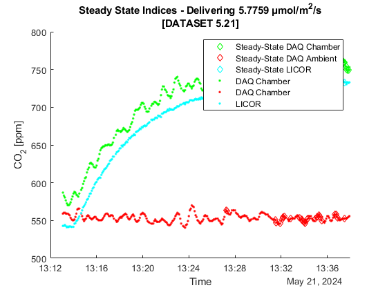


Smooth Data